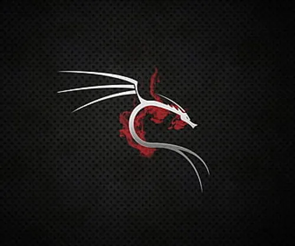
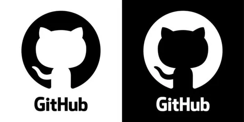

I am a passionate Scrum Master dedicated to keeping our team on track, facilitating seamless communication, and ensuring we deliver high-quality web applications efficiently and on time.

Some of my favorite projects and tools i've used or worked with consist of the Linux Home Lab thats powered by my Raspberry Pi and that runs my personal AI Assistant using OpenClaw and the Gemini API.
I am passionate about AI, Machine Learning, and Cybersecurity. I enjoy building projects that push the boundaries of what's possible and constantly strive to learn new things and improve my skills.
